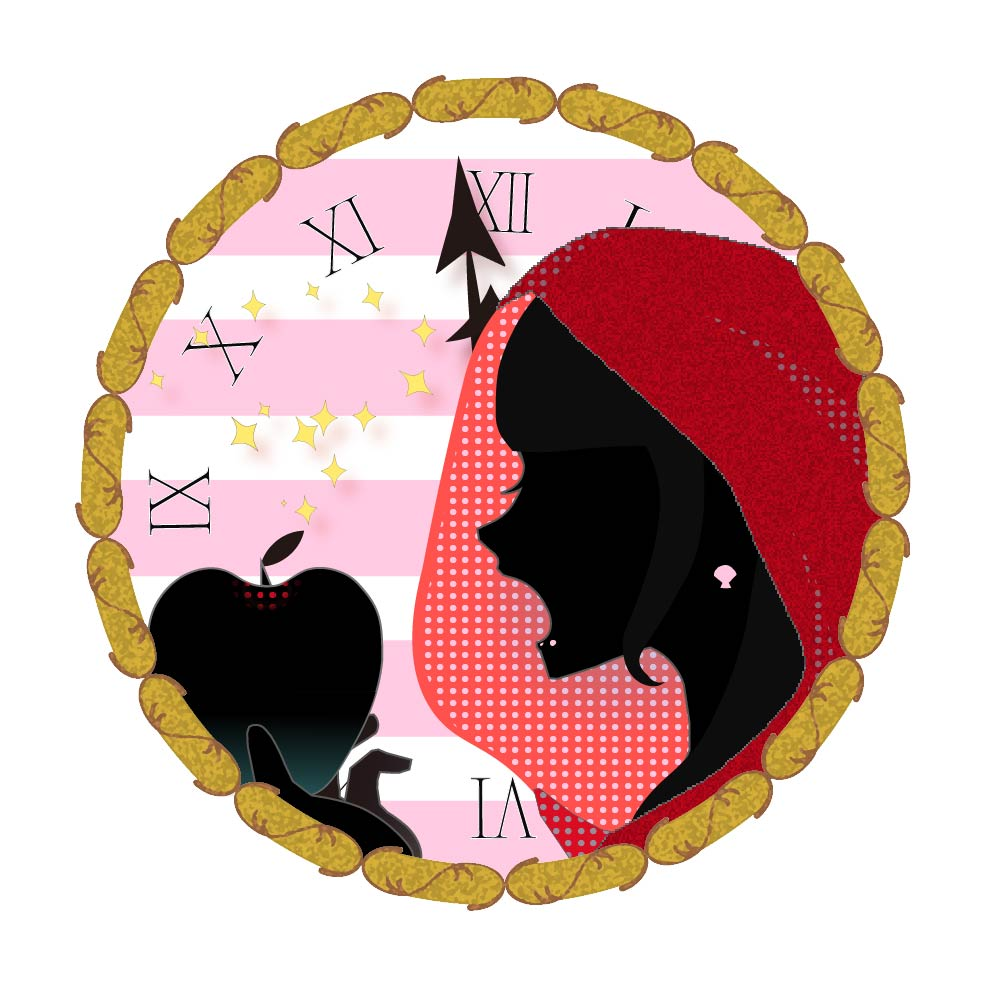

ABOUT

1998年秋田県生まれ。
京都芸術大学通信教育部 文化コンテンツ創造学科イラストレーションコースに在籍。
入学以前は玉川大学工学部にてプログラミングを学び、現在はイラストとデジタル制作を中心に活動している。
明るく親しみやすい表現を意識しながら、見る人が楽しめる作品づくりを心がけている。
趣味はSNSへのイラスト投稿、体を動かすこと。
使用ソフト：VS code、 Eclipse、Unity、Clip Studio Paint など
アイコンはIllustratorを使用。